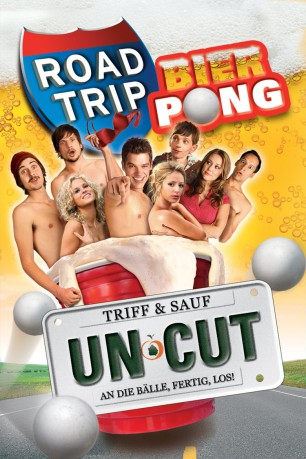

#11445 Road Trip - Beer Pong
 
 IMDB-Wertung: 4.9 / 10
IMDB-Wertung: 4.9 / 10  Metascore: 0
Metascore: 0 
Der brave Student Andy lässt sich von seinen Kumpels überreden, zur nationalen Meisterschaft im "Bier Pong" nach Atlanta zu reisen. Er will die Gelegenheit nutzen, seine verführerische Exfreundin Jenna ausfindig zu machen, die inzwischen als Werbemodel für dieses populäre Trinkspiel fungiert. Allerdings gestaltet sich die Fahrt von New York nach Georgia als reichlich chaotisch: Die Freunde werden von der CIA als Terroristen verdächtigt, stehlen ein Taxi und lassen sich von einer kriminellen Anhalterin aufs Kreuz legen.
Jahr: 2009
Dauer: 96 Minuten
FSK: 16
Land: USA Studio: Paramount Home EntertainmentTonspuren: - , - , - , - , - ,
Untertitel: Deutsch, Englisch,
Auflösung: 1080p (1920x1080) Größe: 5580 MB
Genre: Komödie
Regisseur: Steve Rash
Drehbuch: Brad Riddell, Todd Phillips, Scot Armstrong
Soundtrack: Transcenders
Darsteller:
 DJ Qualls als Kyle
DJ Qualls als Kyle Rhoda Griffis als Tour Group Mom
Rhoda Griffis als Tour Group Mom- Preston Jones als Andy
- Michael Trotter als Korkin
 Julianna Guill als Katy
Julianna Guill als Katy Daniel Newman als Raz-R
Daniel Newman als Raz-R- Julia Levy-Boeken als Jenna
 Danny Pudi als Arash
Danny Pudi als Arash- Mari Morrow als Mandee
- Kaira Akita als Amy
 Michael Beasley als Lester
Michael Beasley als Lester- Melissa Ponzio als The Fare
- Paul Brian Johnson als Gas Station Attendant
- Leandra Terrazzano als Sarah
- Ziah Colon als Sujatmi
- Kimberly Banta als Momma Hartman
 Cesar Aguirre als Fan (uncredited)
Cesar Aguirre als Fan (uncredited)- James Belyeu als University Of Ithaca Student #4 (uncredited)
- Jerome Ro Brooks als College Student (uncredited)
- Chrissy Chambers als Raz-R Fan (uncredited)
- Ashlyn Henson als Chastity Girl #1 (uncredited)
- Gus Langley als Beer Pong Player (uncredited)
- Lynn McArthur als Raz-R Fan (uncredited)
- John Pleasant als Beer Pong Player (uncredited)
- Justin Price als Beer Pong Player (uncredited)
- Anthony Singleton als Beer Pong Fan (uncredited)
- Sonya Thompson als Waitress (uncredited)
 Steve Warren als VA Highway Patrolman (uncredited)
Steve Warren als VA Highway Patrolman (uncredited)- Lorenzo Yearby als Andy's Drummer (uncredited)
- Mary Cobb als Lydia
- Nestor Aaron Absera als Jake
- Carter Gaston als Emcee
- Kaitlyn Reid als Carrie
- Michelle Gordon als Crystal
- Christina Bibby als Heidi
- Paul Bednarz als Tata's Bar Patron (uncredited)
- Preston Burchette als Extra (uncredited)
- Dom Cole als Beer Pong Player (uncredited)
- Zach Daum als Beer Pong Player (uncredited)
- Chris Durant als Dunk Tank Guy (uncredited)
- Amy Frye als Operator (uncredited)
- Nicholas Giancola als Dancing CIA Commando (uncredited)
- Anthony B. Harris als Biker (uncredited)
- Cru Jones als CIA Commando Interrogator (uncredited)
- Shawn Knowles als Indy Driver (uncredited)
- Micheal Leath als Drunk Guy at Carnival (uncredited)
- Patrick McDonald als Beer Pong Player (uncredited)
- Bridget Nichols als Championship Participant (uncredited)
- Shalonda Odoms als College Student (uncredited)
- John Fitzgerald Page als Commando (uncredited)
Datei: X:\2-Dilogie(N-Z)\Road Trip\Road Trip - Beer Pong (2009, FSK16, 1920x1080).mkv seit 06.07.2019
Festplatte: HD Collection-2(A-Z)-3(A-M)
 Alle Filme aus Gruppe '2-Dilogie(N-Z)\Road Trip'
Alle Filme aus Gruppe '2-Dilogie(N-Z)\Road Trip'